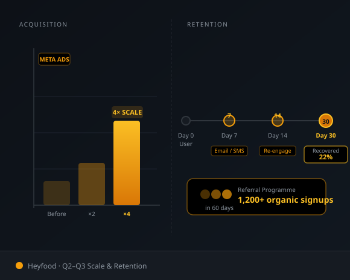
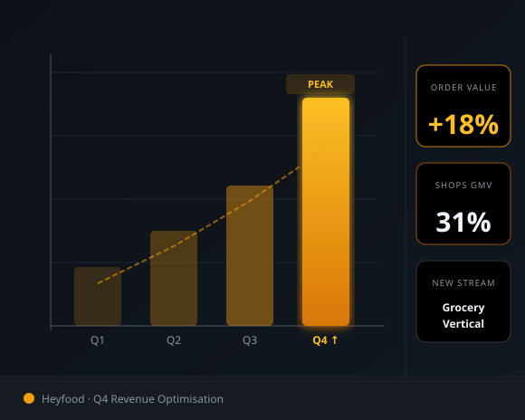

Head of Growth
Heyfood is a food delivery and quick-commerce platform operating in Nigeria. As Head of Growth, I owned the full growth function — from user acquisition and retention to product-led experiments and revenue optimisation.
Heyfood had strong restaurant supply but low demand. The average user ordered once and never returned. The growth team had no systematic acquisition process — just sporadic boosted posts.
Channel Test Results — Q1
Q1 — Foundation
I set up tracking via Meta Pixel and GA4, built a baseline dashboard for CAC and retention, and ran an initial test budget across three channels: Meta Ads, Google Search, and influencer seeding. Meta drove the lowest CAC — it became the primary channel.

Q2–Q3 — Scale & Retention
Scaled Meta spend 4x while maintaining CAC. Launched a referral programme that added 1,200+ organic signups in 60 days. Built an email/SMS retention flow triggered by inactivity at Day 7, Day 14, and Day 30 — recovering 22% of churned users each cycle.

Q4 — Revenue Optimisation
Introduced upsell prompts at checkout that increased average order value by 18%. Ran a "Shops" campaign promoting Heyfood's grocery vertical — generating a new revenue stream that contributed 31% of GMV by end of Q4.
| Metric | Before | After |
|---|---|---|
| Monthly Orders | ~1,100 | 6,800+ |
| 30-Day Retention | 12% | 34% |
| Average Order Value | ₦3,200 | ₦3,780 |
| Organic Signups (referral) | 0 | 1,200+ / 60 days |